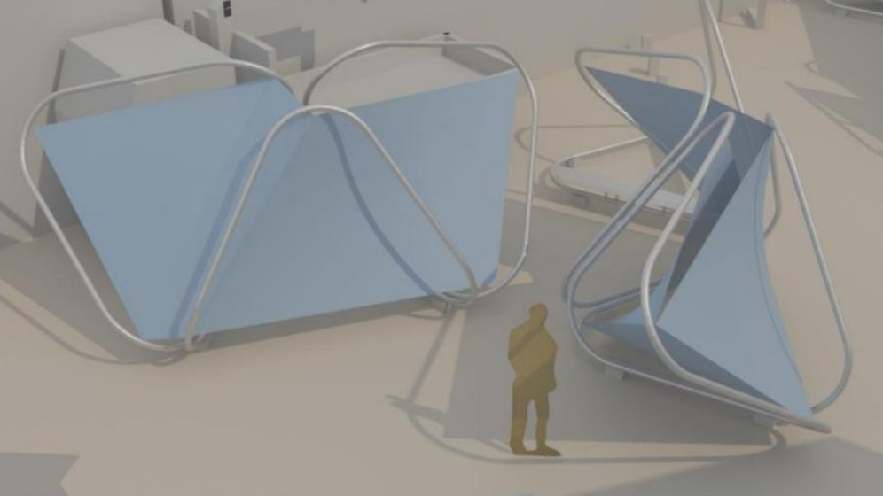
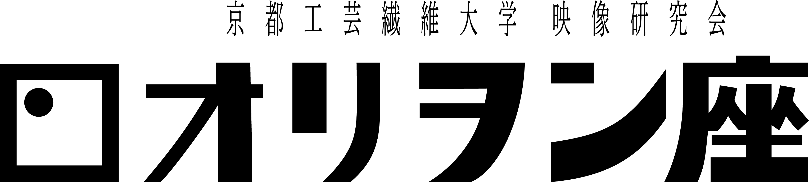
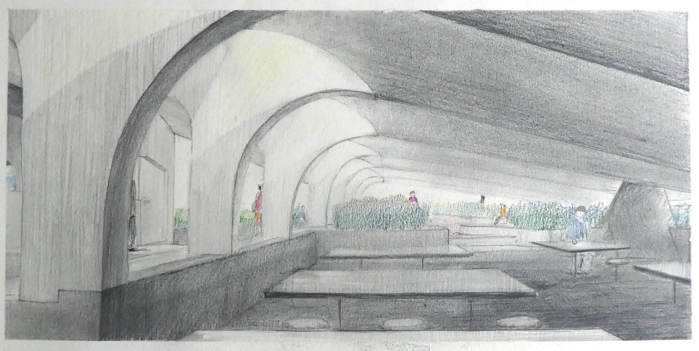

2026
- プラントショップでの活動
さまざまな分野を横断し、持続的に制作・展示・販売を行うためのコレクティブ「プラントショップ」で活動を始めている。
2025
- 『GELEL』
- 『ふるまいの模型』
映像研究会オリヲン座での作品。怪獣と巨人が戦い、防衛隊と駆け引きをする自主怪獣特撮映画。担当は主に美術で、特に京都駅前の街並みを模したジオラマや、それを支える土台等の設計・制作を行った。京都工芸繊維大学学祭での展示、コミュニティスペース「5.6」、イベント「kougei noel」、「全国自主怪獣映画選手権 特撮のまち・須賀川大会」にて上映された。自主怪獣映画選手権では田口清隆賞を受賞した。

大学の卒業制作。都市の小さな記憶を共有するための演劇、その仮設劇場の構想。都市や建築に潜む無意識的な意味を、地域のふるまいと空間の関係から読み解くことを考えた。演劇の模倣性を手がかりに、その地域固有の空間の型を「ふるまいの模型」として抽出し、劇場設計へ展開した。 同年の京都工芸繊維大学 卒業・終了研究展にて展示された。

2022-2026
- 映像研究会オリヲン座での活動
映像制作・鑑賞会・上映などをする京都工芸繊維大学の団体「映像研究会オリヲン座」に所属し、さまざまな活動と作品制作を行う。

2021-2026
- デザイン・建築課題作品
大学での作品。ポスター、オブジェクトなどのデザイン課題のほか、カフェや美術館などの建築設計、都市史調査、建築資料アーカイブと展示などをする。
